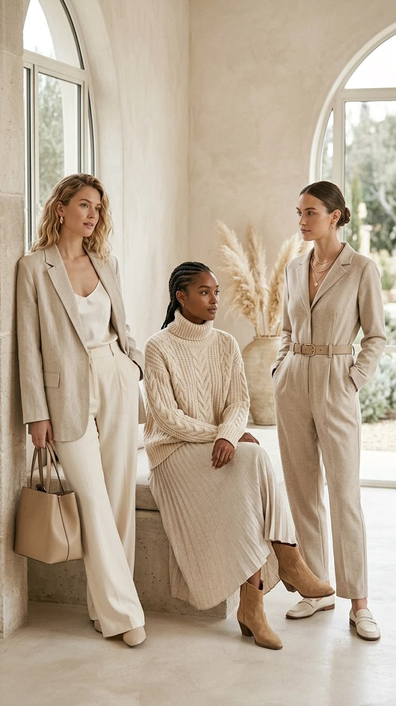

“
Good design is not only about how a dress looks. It is about how confidently you feel when you wear it.
— StyleNest Studio
THE STYLENEST STORY
StyleNest creates thoughtfully designed dresses that balance modern silhouettes, considered fabrics and effortless comfort.
Explore the Collection
WHAT WE BELIEVE
Every silhouette begins with movement, proportion and the way a dress feels when it is actually worn.
We think about texture, weight, drape and comfort before choosing the fabric for a design.
We create modern silhouettes that feel relevant today and remain wearable beyond a single trend.
FABRIC & MATERIALS
Fabric determines how a dress moves, falls and feels. We choose materials based on texture, weight, comfort and drape.
Smooth texture with an elegant, fluid finish.
Lightweight and naturally relaxed for effortless everyday dressing.
Lightweight movement for soft occasion dressing.
Soft, versatile and designed for everyday comfort.
How a Dress Gets Made Here
01
Every silhouette starts as a live fitting — we design toward how fabric moves on a walking, sitting, dancing body.
02
Instead of scaling one pattern up and down, we re-fit proportions at each size so a UK 8 and a UK 18 both hang correctly.
03
Every fabric in rotation is checked against GOTS or OEKO-TEX low-impact standards before it reaches the cutting table.
04
If a dress doesn't sit right, our tailors adjust it free within 60 days — the goal is the fit, not the refund.
“
Good design is not only about how a dress looks. It is about how confidently you feel when you wear it.
— StyleNest Studio
YOUR NEXT LOOK
Explore our collection of considered silhouettes, colours and fabrics.
Shop All Dresses